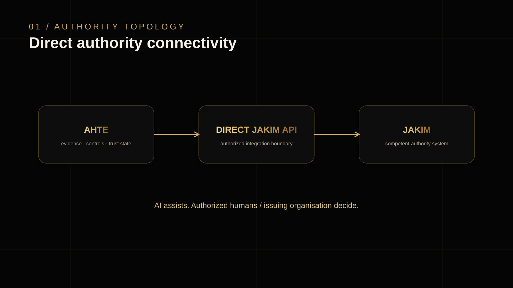
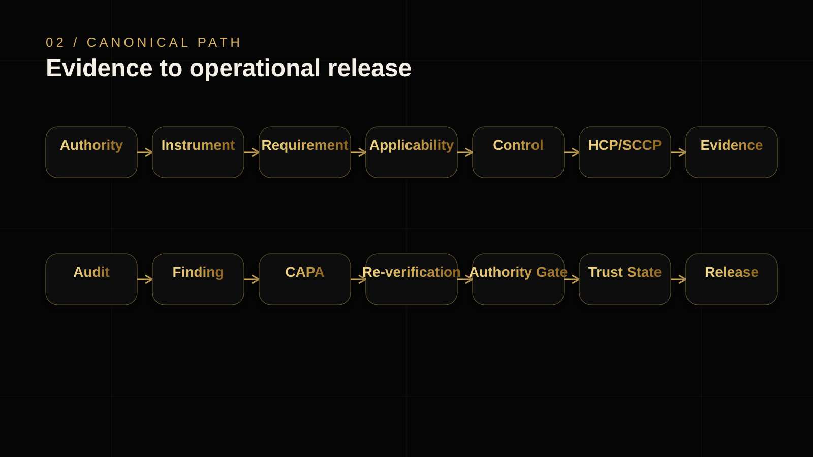
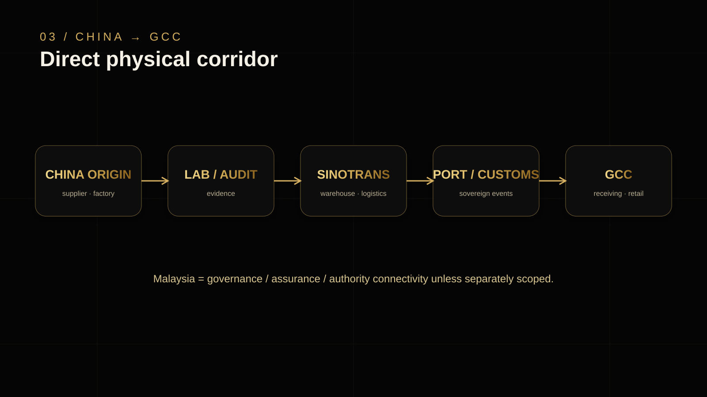
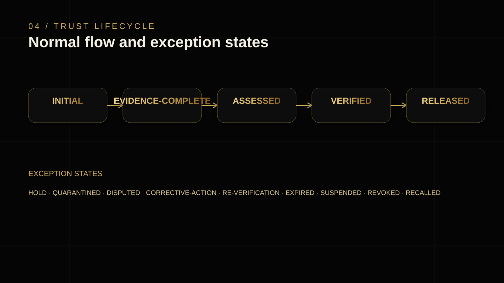
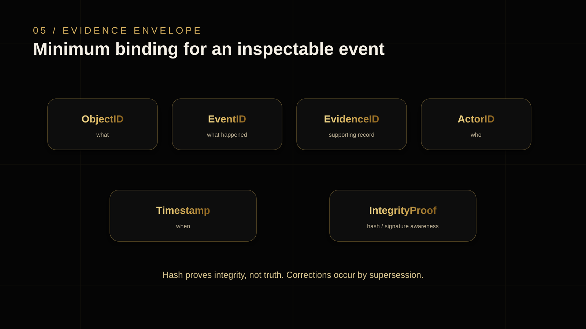
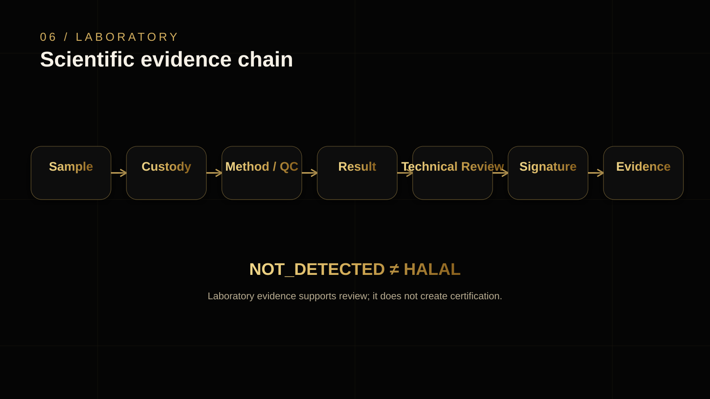
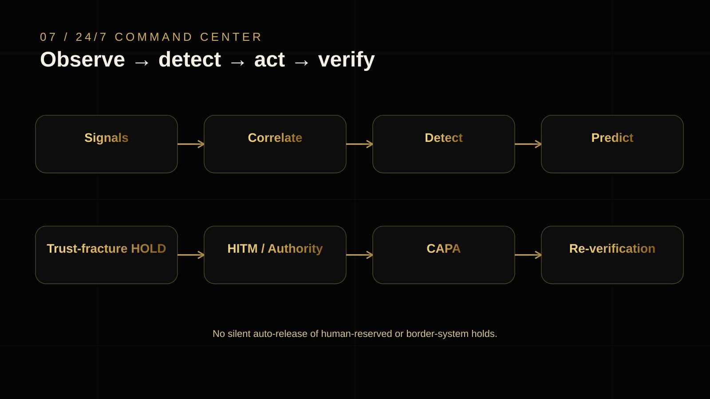
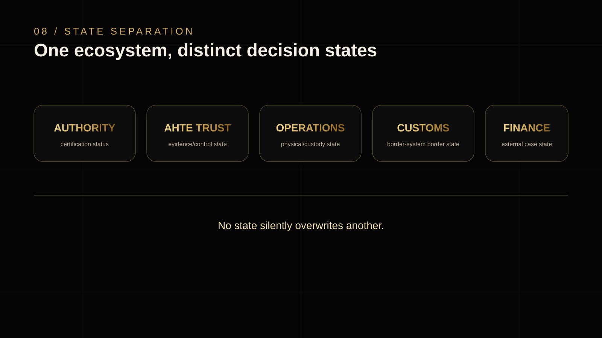

Authority topology
AHTE ⇄ Direct JAKIM API ⇄ JAKIM.
Architecture visuals for executive, institutional, operating and partner use. Each plate preserves the project authority boundaries and China → GCC direct corridor.

AHTE ⇄ Direct JAKIM API ⇄ JAKIM.

Authority through evidence, audit, correction, authority gate, trust state and operational release.

Origin, laboratory/audit, Sinotrans, ports/customs and GCC receiving.

Normal trust progression and controlled exception states.

Object, event, evidence, actor, timestamp and integrity proof.

Sample through signed evidence. NOT_DETECTED ≠ HALAL.

Signals, detection, prediction, holds, HITM, CAPA and re-verification.

Authority, AHTE trust, operations, customs and finance remain distinct.